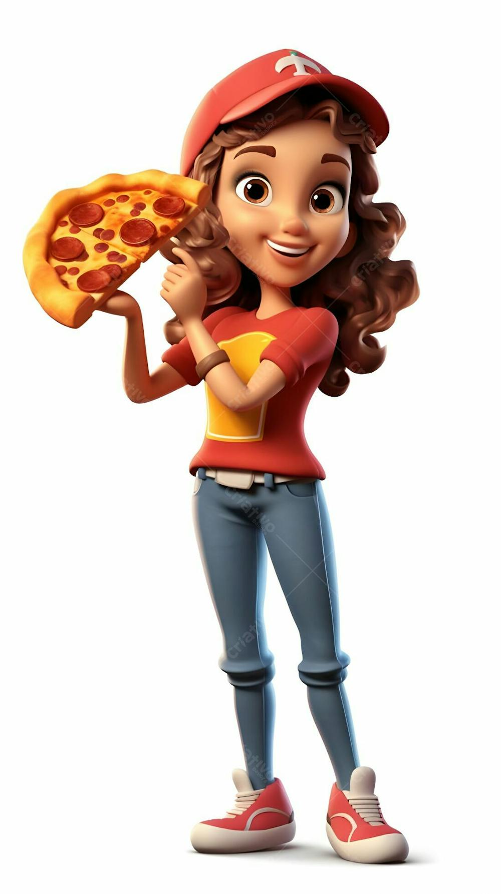
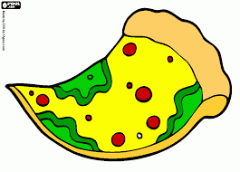
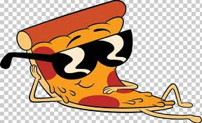

GRAZIELLE DECIDIU SER PIZZAIOLA POR UM DIA. AJUDE ELA A MONTAR SUA PIZZA!
ESCOLHA SEU MOLHO
ESCOLHA SEU MOLHO
SEGUIR PARA O PRÓXIMO PASSO

O MOLHO ESTAVA ESTRAGADO
ÓTIMA ESCOLHA
NÃO CONTENTE COM O MOLHO DE TOMATE, GRAZIELLE COMPROU OUTRO MOLHO PESTO
ESCOLHA O RECHEIO DAS PIZZAS
IR PARA O FORNO?
GRAZILLE ESTA MUITO FELIZ COM SEU DESEMPENHO

OBRIGADA PELA AJUDA